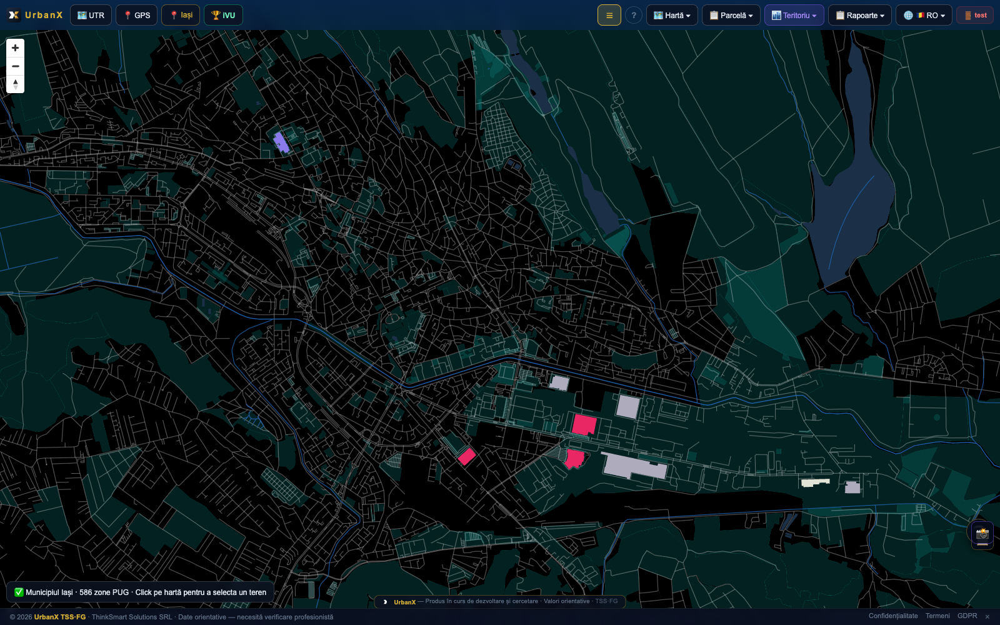

Rețelele se dimensionează azi reactiv — după ce cererea de racord vine la ghișeu. UrbanX pune la dispoziție aceleași date teritoriale (zone PUG, parcele, indicatori de dezvoltare) pe care le văd deja proiectanții și administrațiile, ca semnal timpuriu pentru planificarea rețelei.

POT/CUT/regim de înălțime pe fiecare zonă — bază pentru estimarea densității viitoare de consum.
Fișa parcelei 360° arată funcțiunea propusă și suprafața — semnal direct de cerere viitoare de racord.
Evoluție de populație și dezvoltare pe termen lung, per UAT, deja parte din documentul Masterplan.
Dimensionarea automată a capacității necesare (apă/electricitate/gaz) pe baza dezvoltărilor proiectate, hărți de blocaje de rețea, și alerte timpurii de saturare sunt direcția de dezvoltare — nu funcții disponibile azi. Datele teritoriale de bază (zone, parcele, Masterplan) există deja și sunt fundația directă pentru acest modul.
Vezi unde apar dezvoltări noi înainte de cererea formală de racord.
Corelezi zonele cu creștere reală de POT/CUT cu nevoia viitoare de capacitate.
Aceleași date folosite de primărie — o singură sursă de adevăr, nu estimări divergente.
Cont demo dedicat, 14 zile, izolat de datele reale.